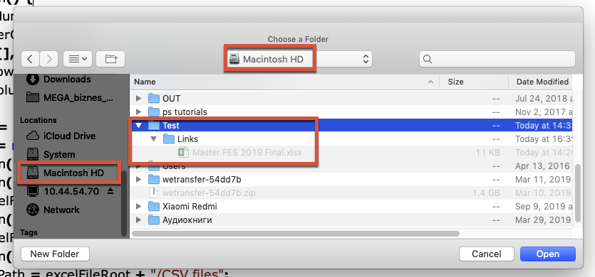
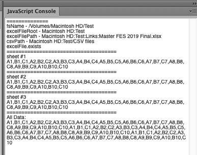
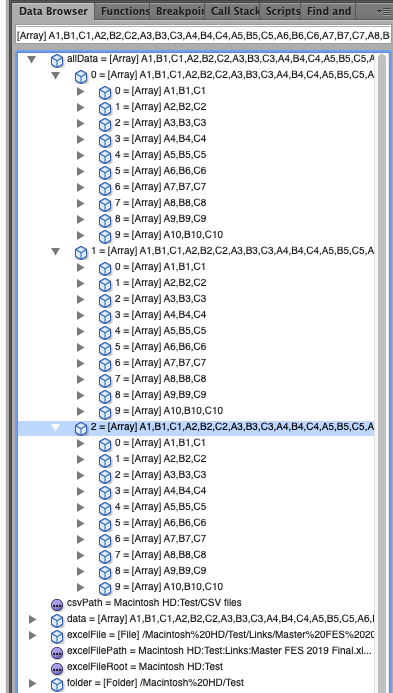

Example of getting a few spreadsheets on Mac
Here is another example of using the function on Mac. I got an e-mail from a guy who attempted to rework it to his needs.
The task was to select a folder and open a specific .xlsx file inside the folder getting data from a few spreadsheets.
To illustrate a possible approach, I made a sample script.
(At the bottom of the page I posted it and the excel file I used for testing.)
Let’s assume (to make things simple) that:
- We know beforehand the exact number of spreadsheets in the workbook: say 3
- Or we have more spreadsheets, but want process only from 1 to 3
- The names of the spreadsheets don’t matter
I select the Test folder on my Macintosh HD drive which contains the Links folder where Master FES 2019 Final.xlsx is located.
If you choose a folder on Desktop or in the user’s Documents folder, it won’t work: such cases would need additional handling.

The script calls the GetDataFromExcelMac function 3 times getting data for each spreadsheet.
function Main() {
var sheetNumber,
maxNumberOfSheets = 3,
allData = [],
splitCharRows = "|",
splitCharColumns = ";";
var folder = Folder.selectDialog("Choose a Folder");
if (folder != null) {
$.writeln("==============");
$.writeln("fsName - " + folder.fsName);
var excelFileRoot = folder.fsName.replace("/Volumes/", "").replace(/\//g, ":");
$.writeln("excelFileRoot - " + excelFileRoot);
var excelFilePath = excelFileRoot + ":Links:Master FES 2019 Final.xlsx";
$.writeln("excelFilePath - " + excelFilePath);
var csvPath = excelFileRoot + "/CSV files";
$.writeln("csvPath - " + csvPath);
var excelFile = new File(excelFilePath);
if (excelFile.exists) {
$.writeln("excelFile.exists");
for (var i = 1; i <= maxNumberOfSheets; i++) {
var data = GetDataFromExcelMac(excelFilePath, splitCharRows, splitCharColumns, sheetNumber);
$.writeln("=====================================\rsheet #" + i + "\r" + data.toString());
allData.push(data);
}
}
$.writeln("=====================================\rAll Data: " + allData.toString());
}
}
It writes the contents of each array (spreadsheet) to console and pushes it into the allData array containing all the data.


Click here to download the script and Excel file for testing.